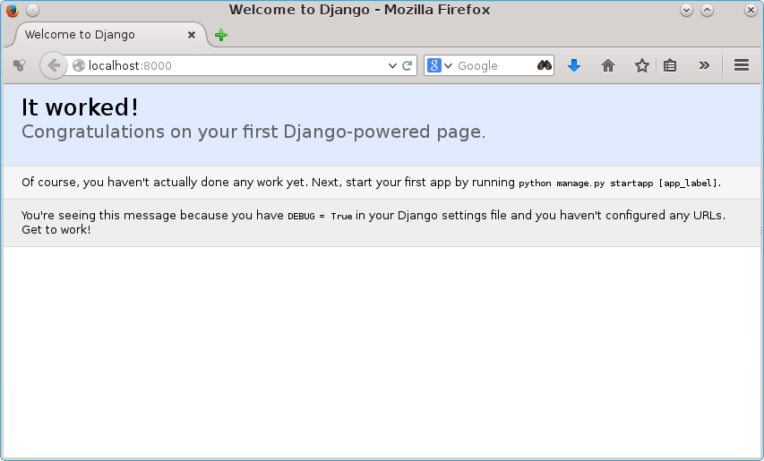

Django
veb okvir za Python
bazirano na verziji 1.8.6


Fakultet tehničkih nauka u Novom Sadu
Katedra za informatiku
Django
- Python okvir za razvoj veb aplikacija
- BSD licenca
- DRY princip
- Full stack
- Database migration
- Modularan - aplikacije
- Automatski admin interfejs
- Velika i aktivna zajednica
- Caching, syndication, internationalization...
Sadržaj
- Kreiranje i podešavanje projekta
- Django modeli
- Admin aplikacija
- Pogledi - Views
- Forme
- Generički pogledi
- Šabloni detaljnije
- Testiranje
- Stilizovanje aplikacije
Kreiranje i podešavanje projekta
Instalacija
pip install Django
- Provera da li je instaliran
$ python -c "import django; print(django.get_version())"
Kreiranje projekta
$ django-admin startproject mysite
- Ovo će kreirati sledeće fajlove i foldere:
mysite/
manage.py
mysite/
__init__.py
settings.py
urls.py
wsgi.py
Podešavanje sajta
- Modul
mysite/settings.py. - Običan Python modul sa strukturama podataka za podešavanje svih aspekata sajta (baza, aplikacije, middleware...)
- Podrazumevano se koristi sqlite3 baza što je sasvim dovoljno za razvoj.
...
# Database
# https://docs.djangoproject.com/en/1.8/ref/settings/#databases
DATABASES = {
'default': {
'ENGINE': 'django.db.backends.sqlite3',
'NAME': os.path.join(BASE_DIR, 'db.sqlite3'),
}
}
...
Pokretanje projekta
$ ./manage.py runserver
Performing system checks...
System check identified no issues (0 silenced).
You have unapplied migrations; your app may not work properly until
they are applied.
Run 'python manage.py migrate' to apply them.
November 08, 2015 - 12:58:17
Django version 1.8.6, using settings 'mysite.settings'
Starting development server at http://127.0.0.1:8000/
Quit the server with CONTROL-C.
Početna strana
Kreiranje inicijalne šeme baze podataka
$ ./manage.py migrate
Operations to perform:
Synchronize unmigrated apps: staticfiles, messages
Apply all migrations: sessions, admin, auth, contenttypes
Synchronizing apps without migrations:
Creating tables...
Running deferred SQL...
Installing custom SQL...
Running migrations:
Rendering model states... DONE
Applying contenttypes.0001_initial... OK
Applying auth.0001_initial... OK
Applying admin.0001_initial... OK
Applying contenttypes.0002_remove_content_type_name... OK
Applying auth.0002_alter_permission_name_max_length... OK
Applying auth.0003_alter_user_email_max_length... OK
Applying auth.0004_alter_user_username_opts... OK
Applying auth.0005_alter_user_last_login_null... OK
Applying auth.0006_require_contenttypes_0002... OK
Applying sessions.0001_initial... OK
- Inicijalna šema potiče od podrazumevano uključenih aplikacija.
Admin interfejs
- Implementiran kao standardna Django aplikacija.
- U verziji 1.8 podrazumevano aktiviran.
- Potrebno je kreirati admin korisnika.
$ python manage.py createsuperuser
Username (leave blank to use 'igor'):
Email address: igord@uns.ac.rs
Password:
Password (again):
Superuser created successfully.
Pristup admin interfejsu
- Posle pokretanja aplikacije moguće je pristupiti admin interfejsu.
- Podrazumevano se pristupa na http://localhost:8000/admin/
Projekti i aplikacije
- Aplikacija je modul koji radi nešto korisno. Na primer, blog sistem, aplikacija za glasanje, forum i sl.
- Projekat predstavlja skup aplikacija i konfiguracije za određene web sajtove.
Kreiranje aplikacije unutar projekta
$ python manage.py startapp polls
- Kreira fajlove i foldere sledećeg oblika:
polls/
__init__.py
admin.py
migrations/
__init__.py
models.py
tests.py
views.py
Django modeli
Django modeli
- Smešteni su u [app_name]/models.py fajlu
- Predstavljaju definitivan izvor definicije podataka u aplikaciji.
- DRY - sve ostalo vezano za podatke se dedukuje iz modela.
from django.db import models
class Question(models.Model):
question_text = models.CharField(max_length=200)
pub_date = models.DateTimeField('date published')
class Choice(models.Model):
question = models.ForeignKey(Question)
choice_text = models.CharField(max_length=200)
votes = models.IntegerField(default=0)
Aktivacija modela
- Potrebno je prvo aktivirati aplikaciju. Obavlja se dodavanjem imena aplikacije u settings.py fajl za sajt, n-torka INSTALLED_APPS
INSTALLED_APPS = (
'django.contrib.admin',
'django.contrib.auth',
'django.contrib.contenttypes',
'django.contrib.sessions',
'django.contrib.messages',
'django.contrib.staticfiles',
'polls',
)
Kreiranje migracije
$ python manage.py makemigrations polls
Migrations for 'polls':
0001_initial.py:
- Create model Choice
- Create model Question
- Add field question to choice
Kreiran je fajl polls/migrations/0001_initial.py
Pregled SQL-a za određenu migraciju
$ python manage.py sqlmigrate polls 0001
BEGIN;
CREATE TABLE "polls_choice" (
"id" integer NOT NULL PRIMARY KEY AUTOINCREMENT,
"choice_text" varchar(200) NOT NULL,
"votes" integer NOT NULL
);
CREATE TABLE "polls_question" (
"id" integer NOT NULL PRIMARY KEY AUTOINCREMENT,
"question_text" varchar(200) NOT NULL,
"pub_date" datetime NOT NULL
);
...
Primena migracije nad bazom
$ python manage.py migrate
Operations to perform:
Synchronize unmigrated apps: messages, staticfiles
Apply all migrations: sessions, admin, contenttypes, auth, polls
Synchronizing apps without migrations:
Creating tables...
Running deferred SQL...
Installing custom SQL...
Running migrations:
Rendering model states... DONE
Applying polls.0001_initial... OK
Migracije - sumarno
Kod migracije šeme baze podataka uz očuvanje podataka raditi sledeće:
- Modifikovati
model.py - Kreirati migraciju:
$ python manage.py makemigrations
- Primeniti migraciju:
$ python manage.py migrate
Registracija modela u admin interfejsu
- U fajlu polls/admin.py
from django.contrib import admin
from .models import Question, Choice
admin.site.register(Question)
admin.site.register(Choice)
Model API
>>> from polls.models import Question, Choice
>>> Question.objects.all()
[]
>>> from django.utils import timezone
>>> q = Question(question_text="What's new?", pub_date=timezone.now())
>>> q.save()
>>> q.id
1
>>> q.question_text
"What's new?"
>>> q.pub_date
datetime.datetime(2012, 2, 26, 13, 0, 0, 775217, tzinfo=<UTC>)
>>> q.question_text = "What's up?"
>>> q.save()
>>> Question.objects.all()
[<Question: Question object>]
String reprezentacija instanci modela
from django.db import models
class Question(models.Model):
# ...
def __str__(self): # __unicode__ on Python 2
return self.question_text
class Choice(models.Model):
# ...
def __str__(self): # __unicode__ on Python 2
return self.choice_text
- Na Python 2 definisati __unicode__ metodu umesto __str__
- Django automatski dodaje __str__ koji poziva __unicode__ i enkoduje ga u UTF-8.
Korisničke metode nad modelom
import datetime
from django.db import models
from django.utils import timezone
class Question(models.Model):
# ...
def was_published_recently(self):
return self.pub_date >= timezone.now() - datetime.timedelta(days=1)
Model API (2)
>>> from polls.models import Question, Choice
>>> Question.objects.all()
[<Question: What's up?>]
>>> Question.objects.filter(id=1)
[<Question: What's up?>]
>>> Question.objects.filter(question_text__startswith='What')
[<Question: What's up?>]
>>> from django.utils import timezone
>>> current_year = timezone.now().year
>>> Question.objects.get(pub_date__year=current_year)
<Question: What's up?>
Model API (3)
>>> Question.objects.get(id=2)
Traceback (most recent call last):
...
DoesNotExist: Question matching query does not exist.
>>> Question.objects.get(pk=1)
<Question: What's up?>
>>> q = Question.objects.get(pk=1)
>>> q.was_published_recently()
True
>>> q = Question.objects.get(pk=1)
>>> q.choice_set.all()
[]
Model API (4)
>>> q.choice_set.create(choice_text='Not much', votes=0)
<Choice: Not much>
>>> q.choice_set.create(choice_text='The sky', votes=0)
<Choice: The sky>
>>> c = q.choice_set.create(choice_text='Just hacking again', votes=0)
>>> c.question
<Question: What's up?>
>>> q.choice_set.all()
[<Choice: Not much>, <Choice: The sky>, <Choice: Just hacking again>]
>>> q.choice_set.count()
3
>>> Choice.objects.filter(question__pub_date__year=current_year)
[<Choice: Not much>, <Choice: The sky>, <Choice: Just hacking again>]
>>> c = q.choice_set.filter(choice_text__startswith='Just hacking')
>>> c.delete()
Podešavanje admin aplikacije
Pogledi - Views
Views - pogledi
- Predstavljaju "vrstu" web stranice: blog home, arhiva po godini...
- U polls aplikaciji imaćemo 4 pogleda:
- Question index stranicu
- Question stranicu sa detaljima
- Question stranicu sa rezultatima
- Akciju za glasanje
- Pogledi generišu sadržaj koji se dostavlja klijentu na zahtev (URL request).
- Sadržaj mogu biti web stranice ali mogu biti npr. i JSON ili XML stringovi.
- Realizuju se kao python funkcije ili metode klase.
Prvi pogled
- U fajlu polls/views.py
from django.http import HttpResponse
def index(request):
return HttpResponse("Hello, world. You're at the polls index.")
- Iz pogleda se vraća
HttpResponseinstanca ili izuzetak.
Rutiranje zahteva
- Svaki URL zahtev se mapira na odgovarajuću view funkciju posredstvom tzv. URLconf-a
- Kreirati fajl polls/urls.py sa sadržajem:
from django.conf.urls import patterns, url
from polls import views
urlpatterns = patterns('',
url(r'^$', views.index, name='index'),
)
- Zatim u glavnom URLconf fajlu za sajt mysite/urls.py uključiti URLconf aplikacije polls.
from django.conf.urls import patterns, include, url
from django.contrib import admin
urlpatterns = patterns('',
url(r'^polls/', include('polls.urls')),
url(r'^admin/', include(admin.site.urls)),
Rutiranje zahteva (2)
- Ako sada odete na adresu
http://localhost:8000/polls/dobićete string "“Hello, world. You’re at the polls index."
Dodatni polls pogledi
Fajl polls/views.py
def detail(request, question_id):
return HttpResponse("You're looking at question %s." % question_id)
def results(request, question_id):
response = "You're looking at the results of question %s."
return HttpResponse(response % question_id)
def vote(request, question_id):
return HttpResponse("You're voting on question %s." % question_id)
Dodatne rute
Fajl polls/urls.py
from django.conf.urls import patterns, url
from polls import views
urlpatterns = patterns('',
# ex: /polls/
url(r'^$', views.index, name='index'),
# ex: /polls/5/
url(r'^(?P<question_id>\d+)/$', views.detail, name='detail'),
# ex: /polls/5/results/
url(r'^(?P<question_id>\d+)/results/$', views.results, name='results'),
# ex: /polls/5/vote/
url(r'^(?P<question_id>\d+)/vote/$', views.vote, name='vote'),
)
Pogled koji nešto zaista i radi
Fajl polls/views.py
from django.http import HttpResponse
from polls.models import Question
def index(request):
latest_question_list = Question.objects.order_by('-pub_date')[:5]
output = ', '.join([p.question_text for p in latest_question_list])
return HttpResponse(output)
# Leave the rest of the views (detail, results, vote) unchanged
- Problem je što je izled vraćene strane hardkodiran u view funkciji.
- Prepustićemo renderovanje stranice Django obrađivaču šablona.
Šabloni
- Kreiramo folder
templatesunutarpollsaplikacije. - Django koristi n-torku
TEMPLATE_LOADERSza callables koji "znaju" kako da učitaju šablon iz raličitih izvora. - Jedan od loadera je
django.template.loaders.app_directories.Loaderkoji učitava iztemplatesfoldera aplikacije. - U
templatesfolderu kreiramopollsdirektorijum i u njemu fajlindex.html - Putanja je dakle
polls/templates/polls/index.html - Iz aplikacije šablon se (zahvaljujući loaderu) referencira sa
polls/index.html
Prvi šablon
Fajl polls/templates/polls/index.html
{% if latest_question_list %}
<ul>
{% for question in latest_question_list %}
<li><a href="/polls/{{ question.id }}/">
{{ question.question_text }}</a></li>
{% endfor %}
</ul>
{% else %}
<p>No polls are available.</p>
{% endif %}
Ažuriranje pogleda da koristi šablon
from django.http import HttpResponse
from django.template import RequestContext, loader
from polls.models import Question
def index(request):
latest_question_list = Question.objects.order_by('-pub_date')[:5]
template = loader.get_template('polls/index.html')
context = RequestContext(request, {
'latest_question_list': latest_question_list,
})
return HttpResponse(template.render(context))
Prečica render
- Učitavanje i rederovanje šablona i vraćanje
HttpResponseinstance je čest slučaj. - Zbog toga postoji funkcija koja obavlja sav taj posao -
render()
from django.shortcuts import render
from polls.models import Question
def index(request):
latest_question_list = Question.objects.all().order_by('-pub_date')[:5]
context = {'latest_question_list': latest_question_list}
return render(request, 'polls/index.html', context)
Greška 404
- Recimo da želimo da renderujemo detalje
Questionobjekta.
from django.http import Http404
from django.shortcuts import render
from polls.models import Question
# ...
def detail(request, question_id):
try:
question = Question.objects.get(pk=question_id)
except Question.DoesNotExist:
raise Http404
return render(request, 'polls/detail.html', {'question': question})
- Za sada šablon
polls/detail.htmlmože biti prosto:
{{ question }}
Prečica get_object_or_404
- Čest obrazac je pronalaženje objekta po id-u i podizanje greške 404 ukoliko ne postoji.
- Za to može da se upotrebi prečica
get_object_or_404()
from django.shortcuts import get_object_or_404, render
from polls.models import Question
# ...
def detail(request, question_id):
question = get_object_or_404(Question, pk=question_id)
return render(request, 'polls/detail.html', {'question': question})
- Takođe postoji i
get_list_or_404()koja koristifilteri podiže grešku 404 ukoliko je lista prazna.
Prepravka details šablona
Fajl polls/templates/polls/detail.html
<h1>{{ question.question_text }}</h1>
<ul>
{% for choice in question.choice_set.all %}
<li>{{ choice.choice_text }}</li>
{% endfor %}
</ul>
URL-ovi u šablonima
- Link u
index.htmlšablonu je bio delimično hardkodiran:
<li><a href="/polls/{{ question.id }}/">{{ question.question_text }}</a></li>
- To nije dobro kod većih aplikacija jer otežava promenu URL šeme.
- Zbot toga je bolje koristiti
{% url %}tag.
<li><a href="{% url 'detail' question.id %}">
{{ question.question_text }}</a></li>
Fajl polls/urls.py
...
# the 'name' value as called by the {% url %} template tag
url(r'^(?P<question_id>\d+)/$', views.detail, name='detail'),
...
Namespaces u URL rutama
- U prethodnom primeru
urltag referencira rutu izurls.pyfajla po imenu. - Problem je ako imamo rute koje se isto zovu u više aplikacija.
- To se rešava domenom imena (namespace).
Fajl mysite/urls.py
from django.conf.urls import patterns, include, url
from django.contrib import admin
urlpatterns = patterns('',
url(r'^polls/', include('polls.urls', namespace="polls")),
url(r'^admin/', include(admin.site.urls)),
)
Fajl polls/templates/polls/index.html
<li><a href="{% url 'polls:detail' question.id %}">
{{ question.question_text }}</a></li>
Forme
Pisanje jednostavne forme
Šablon polls/detail.html
<h1>{{ question.question_text }}</h1>
{% if error_message %}<p><strong>
{{ error_message }}</strong></p>{% endif %}
<form action="{% url 'polls:vote' question.id %}" method="post">
{% csrf_token %}
{% for choice in question.choice_set.all %}
<input type="radio" name="choice" id="choice{{ forloop.counter }}"
value="{{ choice.id }}" />
<label for="choice{{ forloop.counter }}">
{{ choice.choice_text }}</label><br />
{% endfor %}
<input type="submit" value="Vote" />
</form>
Pogled
Fajl polls/urls.py
url(r'^(?P<question_id>\d+)/vote/$', views.vote, name='vote'),
Fajl polls/views.py
from django.shortcuts import get_object_or_404, render
from django.http import HttpResponseRedirect, HttpResponse
from django.core.urlresolvers import reverse
from polls.models import Choice, Question
# ...
def vote(request, question_id):
p = get_object_or_404(Question, pk=question_id)
try:
selected_choice = p.choice_set.get(pk=request.POST['choice'])
except (KeyError, Choice.DoesNotExist):
return render(request, 'polls/detail.html', {
'question': p,
'error_message': "You didn't select a choice.",
})
else:
selected_choice.votes += 1
selected_choice.save()
# Always return an HttpResponseRedirect after successfully dealing
# with POST data. This prevents data from being posted twice if a
# user hits the Back button.
return HttpResponseRedirect(reverse('polls:results', args=(p.id,)))
Rezultati glasanja
- Po uspešnom glasanju (POST forme) vrši se redirekcija na
polls:resultspogled.
Fajl polls/views.py
from django.shortcuts import get_object_or_404, render
def results(request, question_id):
question = get_object_or_404(Question, pk=question_id)
return render(request, 'polls/results.html', {'question': question})
Šablon polls/templates/polls/results.html
<h1>{{ question.question_text }}</h1>
<ul>
{% for choice in question.choice_set.all %}
<li>{{ choice.choice_text }} -- {{ choice.votes }}
vote{{ choice.votes|pluralize }}</li>
{% endfor %}
</ul>
<a href="{% url 'polls:detail' question.id %}">Vote again?</a>
Generički pogledi
Generički pogledi
- Prethodno prikazani pogledi su često korišćeni u web aplikacijama
- Učitavanje podataka iz baze na osnovu parametra prosleđenog preko URL-a.
- Renderovanje šablona i vraćanje rezultata.
- Generički pogledi upravo predstavljaju ovaj obrazac koda.
- Dva generička pogleda:
ListViewiDetailsView
Prerada polls urls.py
Fajl polls/urls.py
from django.conf.urls import patterns, url
from polls import views
urlpatterns = patterns('',
url(r'^$', views.IndexView.as_view(), name='index'),
url(r'^(?P<pk>\d+)/$', views.DetailView.as_view(), name='detail'),
url(r'^(?P<pk>\d+)/results/$', views.ResultsView.as_view(),
name='results'),
url(r'^(?P<question_id>\d+)/vote/$', views.vote, name='vote'),
)
Prerada pogleda
Fajl polls/views.py
...
class IndexView(generic.ListView):
template_name = 'polls/index.html'
context_object_name = 'latest_question_list'
def get_queryset(self):
"""Return the last five published questions."""
return Question.objects.order_by('-pub_date')[:5]
class DetailView(generic.DetailView):
model = Question
template_name = 'polls/detail.html'
class ResultsView(generic.DetailView):
model = Question
template_name = 'polls/results.html'
...
ListView
- Prikaz liste objekata.
- Podrazumevani šablon je oblika
<app name>/<model name>_list.html - To se može promeniti navođenjem atributa
template_name - U kontekst šablona listi objekata se pristupa preko reference
<model_name>_listpri čemu je ime modela u lowercase-u (npr.question_list) - Ovo se menja preko
context_object_name - Podrazumevano je listanje svih objekata modela. Ovo se može promenitit navođenjem
metode
get_queryset(self)
DetailsView
- Prikaz detalja pojedinačnog objekta.
idobjekta se iz URL-a prosleđuje pod imenompk.- Važe ista pravila za određivanje šablona pri čemu je ime oblika
<app name>/<model name>_detail.html - U kontekstu šablona instanci se pristupa po imenu modela u lowercase-u.
Šabloni - detaljnije
Šabloni
- Tekstualni fajlovi koji imaju fiksne i varijablne delove.
- Koriste se za generisanje proizvoljnog tekstualnog sadržaja: HTML, JSON, XML, CSS, JavaScrip, Java, Python, Email, izveštaji...
Primer
{% extends "base_generic.html" %}
{% block title %}{{ section.title }}{% endblock %}
{% block content %}
<h1>{{ section.title }}</h1>
{% for story in story_list %}
<h2>
<a href="{{ story.get_absolute_url }}">
{{ story.headline|upper }}
</a>
</h2>
<p>{{ story.tease|truncatewords:"100" }}</p>
{% endfor %}
{% endblock %}
Varijable konteksta
- Navode se u obliku
{{ varijabla }} - Može se koristiti dot notacija za pristup atributima varijable pri čemu je semantika sledeća:
- Prvo se pokušava po ključu rečnika
- Zatim pristup atributu ili metodi
- Na kraju se pokušava pristup po numeričkom indeksu (deo iza tačke mora biti numerički)
- Ukoliko varijabla ne postoji u kontekstu referenca će biti renerovana na osnovu
podešavanja
TEMPLATE_STRING_IF_INVALIDšto je podrazumevano prazan string.
Filteri
- Na prikaz varijable se može uticati filterima.
{{ value|default:"nothing" }}
Za value == None -- nothing
{{ value|length }}
Za value == [1, 2, 3] -- 3
{{ value|filesizeformat }}
Za value == 123456789 -- 117.7 MB
- Filteri se mogu povezivati
{{ text|escape|linebreaks }}
- Mogu imati parametre
{{ bio|truncatewords:30 }}
{{ list|join:", " }}
Tagovi
- Složenije konstrukcije oblika
{% tag %} ... sadržaj... {% endtag %}
- Služe za implementaciju kontrole toke (petlji, uslova), učitavanje eksternih informacija i sl.
For
<ul>
{% for athlete in athlete_list %}
<li>{{ athlete.name }}</li>
{% endfor %}
</ul>
If, elif i else
{% if athlete_list %}
Number of athletes: {{ athlete_list|length }}
{% elif athlete_in_locker_room_list %}
Athletes should be out of the locker room soon!
{% else %}
No athletes.
{% endif %}
{% if athlete_list|length > 1 %}
Team: {% for athlete in athlete_list %} ... {% endfor %}
{% else %}
Athlete: {{ athlete_list.0.name }}
{% endif %}
Nasleđivanje šablona
- Najkompleksniji i najmoćniji mehanizam Django obrađivača šablona.
- Omogućava definisanje šablona najvišeg nivoa i zatim redefiniciju i specijalizaciju za konkretne slučajeve.
- Ovim se većina konkretnih šablona minimizuje.
Nasleđivanje šablona (2)
<!DOCTYPE html>
<html lang="en">
<head>
<link rel="stylesheet" href="style.css" />
<title>{% block title %}My amazing site{% endblock %}</title>
</head>
<body>
<div id="sidebar">
{% block sidebar %}
<ul>
<li><a href="/">Home</a></li>
<li><a href="/blog/">Blog</a></li>
</ul>
{% endblock %}
</div>
<div id="content">
{% block content %}{% endblock %}
</div>
</body>
</html>
Nasleđivanje šablona (3)
{% extends "base.html" %}
{% block title %}My amazing blog{% endblock %}
{% block content %}
{% for entry in blog_entries %}
<h2>{{ entry.title }}</h2>
<p>{{ entry.body }}</p>
{% endfor %}
{% endblock %}
Nasleđivanje šablona (4)
- Roditeljski
blocktagovi treba da imaju podrazumevani sadržaj. - Ukoliko primetite da duplirate kod u šablonima to je znak da treba da kreirate blok i da ga smestite u roditeljski šablon i onda samo redefinišete gde je potrebno.
- Sadržaj roditeljskog bloka se može referencirati iz bloka putem
{{ block.super }} -
endblockopciono može definisati ime što je zgodno kod većih šablona
{% block content %}
...
{% endblock content %}
Automatski HTML escaping
- Sprečavanje Cross Site Scripting (XSS).
- Django automatski uključuje HTML escaping za sve stringove koje renderuje.
- To je moguće isključiti za pojedine delove šablona ili na nivou celog obrađivača.
- Sledeći karakteri se konvertuju:
- < se konvertuje u <
- > se konvertuje u >
- ' (jednostruki navodnici) se konvertuju u '
- " (dvostruki navodnici) se konvertuju u "
- & se konvertuje u &
Automatski HTML escaping - varijable
This will be escaped: {{ data }}
This will not be escaped: {{ data|safe }}
Za data vrednost '<b>' rezultuje sledećim kodom
This will be escaped: <b>
This will not be escaped: <b>
Automatski HTML escaping - blokovi
{% autoescape off %}
Hello {{ name }}
{% endautoescape %}
Auto-escaping is on by default. Hello {{ name }}
{% autoescape off %}
This will not be auto-escaped: {{ data }}.
Nor this: {{ other_data }}
{% autoescape on %}
Auto-escaping applies again: {{ name }}
{% endautoescape %}
{% endautoescape %}
Pozivi metoda u šablonima
- Moguće je pozivati metode koje nemaju parametre.
- Sintaksa je ista kao za pristup atributima.
{% for comment in task.comment_set.all %}
{{ comment }}
{% endfor %}
{{ task.comment_set.all.count }}
Moguće je pozivati i korisničke metode.
class Task(models.Model):
def foo(self):
return "bar"
{{ task.foo }}
Biblioteke tagova i filtera
- Tagovi i filteri se mogu definisati od strane korisnika ili autora aplikacija.
- Učitavaju se sa tagom
load
{% load humanize %}
{{ 45000|intcomma }}
- U ovom slučaju aplikacija
django.contrib.humanizemora biti omogućena u konfiguracijiINSTALLED_APPS - Moguće je istovremeno učitati više biblioteka.
{% load humanize i18n %}